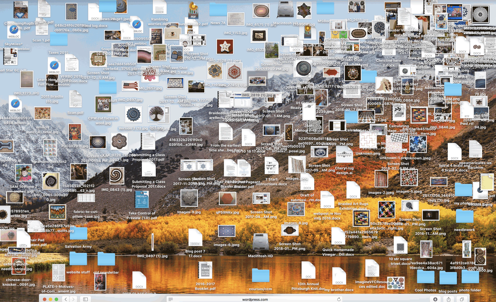
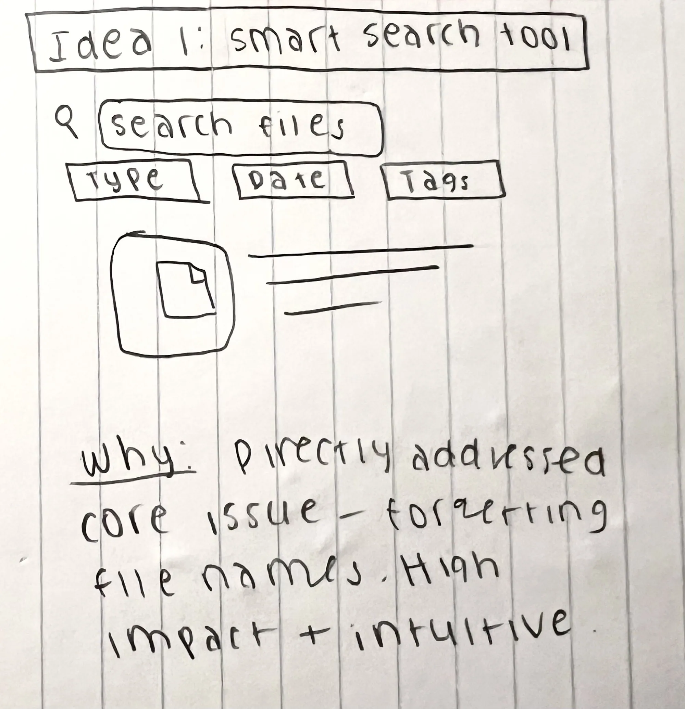
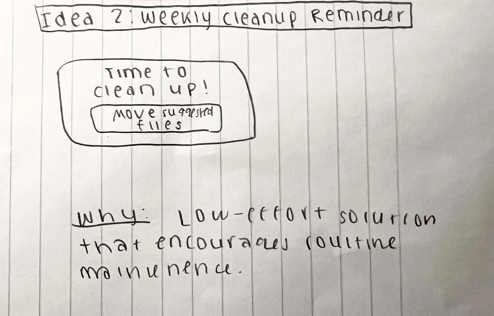

Our class project ended, but I kept losing my own files. So I rebuilt the idea on my own: a layer for macOS that finds a file the moment you mention it, without ever asking you to organize.
Role
Solo designer + engineer v1: design & prototyping lead
Timeline
v1 ContextFile · Spring 2025 v2 Contexto · Fall 2026
Skills
Interaction design, product strategy, system architecture
Tools
Figma, HTML/JS, Claude Code, Swift next
The problem
Students remember what a file was for, not what it’s called. Finder only searches names, so the file is “lost” the moment you need it.
What I did
Reframed the brief from “help people organize” to “never ask them to.” Designed 6 versions and landed on an underline that appears under the sentence you’re writing.
Where it is
v1 tested with 6 students. v2 is a working prototype; next is proving the underline natively, then a private beta.
The thread: the hardest part wasn’t making it smart. It was deciding what the system should do on its own, and when to stay quiet and leave it to the person.
Project overview
The project ended. The frustration didn’t.
In Spring 2025, my team designed ContextFile, a Finder concept that surfaced files based on context. One student told us, “It’s like Photos Memories but for school.” Then the project ended, and I went back to losing my own files.
“The search bar in Finder: I literally will type part of the name and nothing will show up, which I hate.”
Me, November 2026
Almost two years later, the problem hadn’t moved. What had changed was what one person could build. With on-device models and Claude, I could take the idea further on my own, so I started over as Contexto.
College students on Mac
Their files span years of classes, versions, and downloads, and they have no time to file them.
Find it without stopping
Describe a file in the sentence you’re already writing, and have it within 3 seconds.
Never touch your files
Contexto doesn’t move, rename, or delete anything, so trying it carries no risk.
Problems
Losing a file usually starts long before you need it.
A lecture gets downloaded, renamed, and forgotten. Months later, you remember the class but not the filename, and four small failures stack up at the worst possible moment.
You remember the wrong details
You know which class it was for, but search only wants the name.
Every copy looks right
With eleven resumes, “final_v3 (2)” could be the newest or a mistake.
Files have many homes
A lecture belongs to a class, a term, and midterm prep. A folder picks one.
The need interrupts you
You’re mid-sentence when you need the file, so searching breaks your focus.
Design challenge
I stopped asking people to get organized.
Our first question assumed people would keep their files in order if the tools were better. Our research suggested they wouldn’t, so I moved that work to the system.
How might we help students organize their files?
How might we help people find any file just by mentioning it, without ever organizing?
Research
We went looking for clutter and found a memory problem.
In 2025, we surveyed and interviewed students about how they manage files. Downloads were the biggest complaint, but the stories kept returning to the same moment: knowing a file exists and having no way to reach it.

Files pile up until the desktop stops being useful.
Biggest challenges in file organization
Too many downloads24
Forgetting16
No time15
No system11
Number of responses, v1 student survey.
Filing didn’t solve it
“Sometimes I put things in folders, and then forget they exist.”
Search depended on memory
“It’s really bad if I forget the name of the file.”
Saving created more doubt
“Duplicates! Old HW versions, resumes, etc.”
The solution
What if the file came to you?
Contexto gives every file richer context: its class, term, version, and source. When you write “my final project from CS 61A,” it underlines the phrase, and pressing Tab attaches the file. Three rules from our research shaped how it behaves.
Never ask people to file
v1 testers told us manual tagging would be a dealbreaker, so every tag is automatic.
Never move a file
Testers wanted to check before anything moved. Contexto sidesteps that by working as a layer.
Stay quiet unless sure
Search still works after a missed suggestion. A confident wrong one teaches you to ignore it.
Lo-fi designs
From paper sketches to three key moments.
The idea started on paper as a smart search tool and a cleanup reminder. When I returned to it, I stopped designing screens first and mapped the moments when someone actually needs a file.

Idea 1: smart search tool

Idea 2: weekly cleanup reminder
Three user flows
Mention
Write “my final project”→Phrase is underlined→Hover to peek→Press Tab to attach
Upload
Reach an upload field→See the newest version→Click to attach
First run
Pick folders→See files organized→Try one mention→Turn it on
Hi-fi designs
It took six versions to get out of the way.
We tested v1 with 6 students, and they loved having files surfaced automatically. But one comment changed the direction: “If it’s just buried in Finder, I might not remember to check it.”
Each version after that was an attempt to answer that comment.
v1 · A Finder sectionUseful, but only if you remembered to go there.
v2.1 · A constellationBeautiful, but it looked like AI, and browsing was still searching.
v2.2 · An invisible pickerI hid so much that the flow stopped making sense.
v2.3 · A guided storyThe logic came back, but it needed a narrator.
v3 · A docked panelEasier to use, but still one more place to open.
v4 · An ambient underlineContexto finally came to the sentence instead.
Final features
One layer, from day one to deadline.
Mention it, and it’s there.
You never leave the email. The phrase is underlined as you write, a hover shows which file it found and why, and Tab attaches it.
Organized, with nothing moved.
Ambient help stays invisible until your first mention, so setup needed its own payoff. Day one builds views by class, term, and latest version.
Type any part of a name.
This is the frustration that brought me back. ⌥Space finds fragments and typos, and it doesn’t need AI to do it.
The right version, every upload.
Sending the wrong resume is the costliest mistake here, so the newest correct file waits right under the field.
How it works
I split the intelligence into steps I could test.
A single AI model would be hard to debug and hard to trust. So each step does one job, and AI only handles what simple rules can’t.
IndexFolders you allow
TagRules first, then AI
ConnectBuild the graph
RankScore the moment
SurfaceOne, two, or none
Folders store a location. The graph stores meaning.
Folders · where did I put it?
Documents
School
Fall stuff
econ??
Lecture07 (1).pdf
Downloads
Lecture07.pdf
“Untitled 3.pdf” says nothing
Download source, first-page text, and dates matter more, and a class tag needs two signals that agree.
RAG couldn’t find “my latest”
Two resumes read almost the same, so results are ranked by class, version, and past use.
Files get readable cards
Each file has a markdown card, so I can open everything Contexto knows as an Obsidian vault.
Challenges
The hardest decisions were about restraint.
Once the interaction worked in a prototype, harder questions appeared. Each one forced a tradeoff between what Contexto could do and what people would trust.
Should this live inside Finder?
Open question
The problem
Finder is where people expect their files, but a sidebar there needs an extension I haven’t proven yet. It’s also the place v1 testers said they’d forget.
Where I landed
Start in Contexto’s own window, and treat existing folder names as useful signals.
Can an underline work everywhere?
Needs testing
The problem
The whole experience depends on reading text and drawing inside other apps. macOS exposes that differently from app to app, and web editors can hide it entirely.
Where I landed
Prove it in Apple’s apps first, with a quiet corner badge as the fallback.
How do you tag a messy Mac?
Decided
The problem
Real files are named “download (1).pdf.” Guessing would make the system look smart until the first confident mistake.
Where I landed
Rank the evidence, require agreement, and leave unsure files untagged.
How much should leave the device?
Decided
The problem
Claude would tag difficult files better, and the estimated cost is only cents. The real price is privacy, because tagging means reading personal documents.
Where I landed
On-device by default, with Claude as an opt-in that only sees first-page excerpts.
Opportunity · Proposed direction
An agent is only as useful as what it can find.
The core of Contexto isn’t an agent, because a suggestion has to be instant and predictable. But the graph opens a bigger opportunity. Agents can plan and write, yet they don’t know which resume is current or which files belong to ECON 1. Contexto could give them that memory.
“Get my Figma application ready.”
Find the right resume and portfolio, then list what’s missing.
“Collect what I need for my midterm.”
Pull the relevant material from a class you took years ago.
“Which resume did I send each company?”
Turn your application history into a simple table.
How one request would work
Agent flow
You ask for help→Agent searches the graph→Agent stages the files→You click Attach
What an agent could do
Search files, read cards and excerpts, compare versions, and stage an upload.
What it could never do
Move, rename, delete, or send anything. The final click always stays with you.
I’d start with an MCP server, so tools like Claude Desktop and Claude Code could use Contexto through read-only tools. If that proves useful, an opt-in Agent mode could follow inside the app.
Conclusions
What building it myself taught me.
Organization is the system’s job. A graph of meaning beats folders nobody maintains.
Invisible isn’t the goal. Effortless is. v2.2 hid too much; v4 shows exactly one thing, exactly where you are.
Timing is the interface. The same file is noise in a sidebar and magic under the sentence that needs it.
Show the why, stay quiet when unsure. Trust comes from grounded reasons and few false alarms.
Never move a file. Layers, links, and tags, so trying it costs nothing.
What I got wrong first
I spent two versions making Contexto beautiful (v2.1) and then invisible (v2.2). Neither was the point. The fix was timing: show one thing, exactly where you’re already writing.
Reflection
I came back to this project because I was still annoyed, and that turned out to be useful. Living with the problem showed me what our first version missed. Working through tagging and confidence also changed how I design: the quietest parts of the interface came from technical limits.
Next steps
Prove the underlineBuild the riskiest piece natively in Notes and Mail.
Test with studentsv2 hasn’t been user tested yet, so this comes before more features.
Run a private betaPut the Mac app in the hands of 6–8 students.